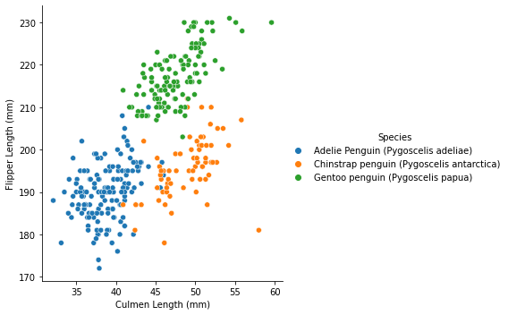

## Standard Imports ##
from matplotlib import pyplot as plt
import numpy as np
import seaborn as sns
import pandas as pdData Visualization of the Palmer Penguins Dataset
This post will be a tutorial on how to create a clean data visualization in Python using Seaborn and Pandas.
Introduction
First, why should we visualize data? From identifying trends or outliers to serving as a powerful summary, visualizing data offers tons of utility for those interested in accessing a dataset. Creating visualizations through Python is a solid approach since Python offers many options for creating and customizing plots.
The idea of creating a visualization in Python involves importing a dataset to Python, preparing the data for plotting, then using a package such as Seaborn, which will be used in this section, or Matplotlib.
By the end of the post, we will take the Palmer Penguins dataset and create a plot comparing the penguins’ culmen length versus their flipper length and demonstrating what the visualization can tell us.
Setup
To create a visualization of data, we first need to read in our data!
The required packages include Matplotlib and Seaborn for plotting, NumPy for numerical functions, and Pandas for creating and manipulating DataFrames from .csv files.
After importing the necessary packages, read in the dataset via the included url and the read_csv() function in Pandas. I used the .copy() function to create an identical DataFrame in the event I need the original DataFrame again. The second codeblock using the .head() function serves as a check to ensure the data was read properly.
## Reading Dataset ##
url = "https://raw.githubusercontent.com/PhilChodrow/PIC16B/master/datasets/palmer_penguins.csv"
penguins = pd.read_csv(url)
penguinsMod = penguins.copy()## Verifying Dataset ##
penguins.head()
penguinsMod.head()| studyName | Sample Number | Species | Region | Island | Stage | Individual ID | Clutch Completion | Date Egg | Culmen Length (mm) | Culmen Depth (mm) | Flipper Length (mm) | Body Mass (g) | Sex | Delta 15 N (o/oo) | Delta 13 C (o/oo) | Comments | |
|---|---|---|---|---|---|---|---|---|---|---|---|---|---|---|---|---|---|
| 0 | PAL0708 | 1 | Adelie Penguin (Pygoscelis adeliae) | Anvers | Torgersen | Adult, 1 Egg Stage | N1A1 | Yes | 11/11/07 | 39.1 | 18.7 | 181.0 | 3750.0 | MALE | NaN | NaN | Not enough blood for isotopes. |
| 1 | PAL0708 | 2 | Adelie Penguin (Pygoscelis adeliae) | Anvers | Torgersen | Adult, 1 Egg Stage | N1A2 | Yes | 11/11/07 | 39.5 | 17.4 | 186.0 | 3800.0 | FEMALE | 8.94956 | -24.69454 | NaN |
| 2 | PAL0708 | 3 | Adelie Penguin (Pygoscelis adeliae) | Anvers | Torgersen | Adult, 1 Egg Stage | N2A1 | Yes | 11/16/07 | 40.3 | 18.0 | 195.0 | 3250.0 | FEMALE | 8.36821 | -25.33302 | NaN |
| 3 | PAL0708 | 4 | Adelie Penguin (Pygoscelis adeliae) | Anvers | Torgersen | Adult, 1 Egg Stage | N2A2 | Yes | 11/16/07 | NaN | NaN | NaN | NaN | NaN | NaN | NaN | Adult not sampled. |
| 4 | PAL0708 | 5 | Adelie Penguin (Pygoscelis adeliae) | Anvers | Torgersen | Adult, 1 Egg Stage | N3A1 | Yes | 11/16/07 | 36.7 | 19.3 | 193.0 | 3450.0 | FEMALE | 8.76651 | -25.32426 | NaN |
Dataset Cleanup
Next, adjust the data. There will be some invalid values in the data, such as NaN (not a number). The code below will get rid of these data points using the .dropna() function of Pandas, removing them from the culmen length and flipper length columns. Other columns will be removed to eliminate any unnecessary information.
## NaN Values ##
# The 'subset' tag clears NaNs from listed columns only.
penguinsMod = penguinsMod.dropna(subset=["Culmen Length (mm)", "Flipper Length (mm)"])## Removing Unnecessary Columns ##
# Create a list of column ID's to remove.
columnId = ["studyName","Individual ID",
"Clutch Completion","Comments",
"Date Egg"]
# Removes the listed columns in columnId.
penguinsMod = penguinsMod.drop(columnId, axis=1)## Display Modified DataFrame ##
penguinsMod.head()| Sample Number | Species | Region | Island | Stage | Culmen Length (mm) | Culmen Depth (mm) | Flipper Length (mm) | Body Mass (g) | Sex | Delta 15 N (o/oo) | Delta 13 C (o/oo) | |
|---|---|---|---|---|---|---|---|---|---|---|---|---|
| 0 | 1 | Adelie Penguin (Pygoscelis adeliae) | Anvers | Torgersen | Adult, 1 Egg Stage | 39.1 | 18.7 | 181.0 | 3750.0 | MALE | NaN | NaN |
| 1 | 2 | Adelie Penguin (Pygoscelis adeliae) | Anvers | Torgersen | Adult, 1 Egg Stage | 39.5 | 17.4 | 186.0 | 3800.0 | FEMALE | 8.94956 | -24.69454 |
| 2 | 3 | Adelie Penguin (Pygoscelis adeliae) | Anvers | Torgersen | Adult, 1 Egg Stage | 40.3 | 18.0 | 195.0 | 3250.0 | FEMALE | 8.36821 | -25.33302 |
| 4 | 5 | Adelie Penguin (Pygoscelis adeliae) | Anvers | Torgersen | Adult, 1 Egg Stage | 36.7 | 19.3 | 193.0 | 3450.0 | FEMALE | 8.76651 | -25.32426 |
| 5 | 6 | Adelie Penguin (Pygoscelis adeliae) | Anvers | Torgersen | Adult, 1 Egg Stage | 39.3 | 20.6 | 190.0 | 3650.0 | MALE | 8.66496 | -25.29805 |
Visualization and Plotting
Now that the data has been cleaned up, we can refer straight to the Seaborn package! I want to compare the culmen length and flipper length of the penguins, while capturing which species each penguin is. To make a scatterplot type of figure for this scenario, we will use the Seaborn relplot() function. I will include an extra argument to include information of the species each point represents, which will cause each species of penguin to have a different color.
## Generating Plot ##
ax = sns.relplot(data=penguinsMod,
x="Culmen Length (mm)",
y="Flipper Length (mm)",
hue="Species")
Conclusion
We have finished! We created a data visualization using a subset of the information given from the Palmer Penguin dataset.
Regarding the usefulness of this visualization, the clustering of data can indicate that certain species of penguins tend to have certain culmen length to flipper length measurements. From there, patterns could be deduced regarding the visualization of the current data we are given.
As mentioned prior, there are more options for plotting in Matplotlib and Seaborn, from scatterplots to barplots and many more. If you are interested in looking into this more, visit Seaborn’s website or Matplotlib’s website and explore their documentation!